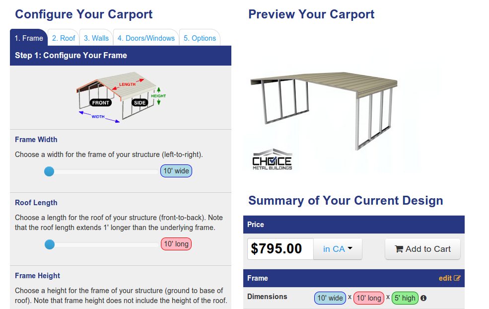

Your browser doesn't support the features required by impress.js, so you are presented with a simplified version of this presentation.
For the best experience please use the latest Chrome, Safari or Firefox browser.
How to go together AngularJS + Python + Google Script + Blender
Intermezzo
- Builder's UI
- Pricing sheets generator
- Server-side 3D rendering

ngModel.$render = function() {
selectOption(element, ngModel.$viewValue, addCheck);
};
function read() {
ngModel.$setViewValue(currentValue);
}
A master Google Spreadsheet
then he commits changes to the his pricing strategy
select Export menu entry and...
gets a bunch of JSON files
Client-side rendering? Why not?
Canvas + IE8 = a lack of speed
Only 70% of browsers supports WebGL
Blender
Free, fast and... amazing stunning
Idyll?
No :(
- A lot of preparations
- Blender was used as a program which is not supposed to be used in such manner.
Tornado-based asynchronous server
- start a bunch of Blender instances
- processes incoming requests
- waits while an image is being rendered.
a very model-specific python script
- keeps Blender in memory
- applies arguments for scene
- pings the main server when an image is ready
Cheers! Questions?